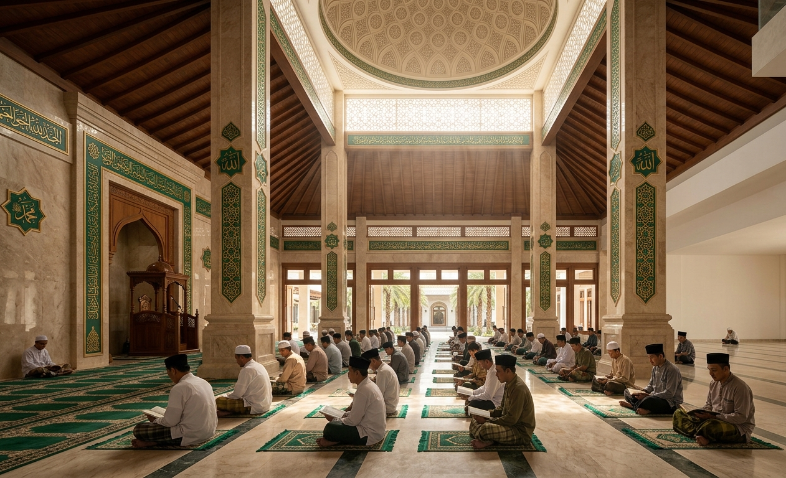

Menjadi bagian dari perjalanan dakwah, pendidikan, dan kegiatan sosial untuk membangun generasi yang beriman, berilmu, dan berakhlak.

Majelis ini hadir sebagai wadah bagi kaum muslimin untuk belajar, menuntut ilmu, dan mempererat ukhuwah Islamiyah.
Melalui kajian rutin, pendidikan Al-Qur'an, pembinaan generasi muda, serta berbagai kegiatan sosial, kami berusaha memberikan manfaat bagi masyarakat sekitar.
Kami berkomitmen untuk terus mengembangkan kegiatan yang memberikan dampak positif dan menjadi sarana kebaikan bagi umat.
Menjadikan majelis sebagai tempat bertumbuh dalam ilmu, iman, dan amal.
Menjadi wadah pembinaan umat yang berlandaskan Al-Qur'an dan As-Sunnah serta mampu memberikan manfaat bagi masyarakat.
Mengutamakan pembelajaran dan pemahaman ilmu agama yang bermanfaat.
Membentuk pribadi yang memiliki akhlak mulia dalam kehidupan sehari-hari.
Membangun persaudaraan dan kepedulian antar sesama muslim.
Menghadirkan kegiatan sosial yang memberikan manfaat nyata bagi masyarakat.
Beberapa program yang menjadi bagian dari kegiatan Majelis.
Kajian keislaman yang diselenggarakan secara rutin untuk masyarakat.
Program pembelajaran Al-Qur'an untuk meningkatkan kemampuan membaca dan menghafal.
Berbagai kegiatan sosial sebagai bentuk kepedulian kepada masyarakat.
Mengembangkan kegiatan dakwah dan pembinaan umat melalui berbagai program.
Mari menjadi bagian dari kegiatan dan program kebaikan yang kami selenggarakan.
Hubungi Kami